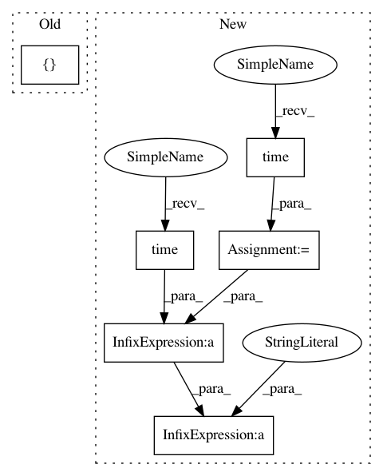

a18932cb658c012808dd78bbd7f5bf1fe712e6c9,examples/neural_style_transfer.py,,,#,236
Before Change
x = x.reshape((1, 3, img_width, img_height))
return np.array(f_grads([x])).flatten().astype("float64")
f_loss = K.function([combination_image], [loss])
def eval_loss(x):
x = x.reshape((1, 3, img_width, img_height))
return f_loss([x])[0].astype("float64")
After Change
x = np.random.uniform(0, 255, (1, 3, img_width, img_height))
for i in range(10):
print("Start of iteration", i)
start_time = time.time()
x, min_val, info = fmin_l_bfgs_b(evaluator.loss, x.flatten(),
fprime=evaluator.grads, maxfun=20)
print("Current loss value:", min_val)
// save current generated image
img = deprocess_image(x.reshape((3, img_width, img_height)))
fname = result_prefix + "_at_iteration_%d.png" % i
imsave(fname, img)
end_time = time.time()
print("Image saved as", fname)
print("Iteration %d completed in %ds" % (i, end_time - start_time))
In pattern: SUPERPATTERN
Frequency: 3
Non-data size: 6
Instances
Project Name: keras-team/keras
Commit Name: a18932cb658c012808dd78bbd7f5bf1fe712e6c9
Time: 2016-01-15
Author: francois.chollet@gmail.com
File Name: examples/neural_style_transfer.py
Class Name:
Method Name:
Project Name: ilastik/ilastik
Commit Name: fe073644f6a8f37e9ce57df903bf12b560690fc3
Time: 2012-09-14
Author: christoph.straehle@iwr.uni-heidelberg.de
File Name: lazyflow/operators/obsolete/classifierOperators.py
Class Name: OpPredictRandomForest
Method Name: execute
Project Name: keras-team/keras
Commit Name: a18932cb658c012808dd78bbd7f5bf1fe712e6c9
Time: 2016-01-15
Author: francois.chollet@gmail.com
File Name: examples/neural_style_transfer.py
Class Name:
Method Name:
Project Name: automl/SMAC3
Commit Name: 5dedff41e8b9d4f548dfeaeac97ed9c11cc0617b
Time: 2016-02-29
Author: lindauer@informatik.uni-freiburg.de
File Name: smac/smbo/smbo.py
Class Name: SMBO
Method Name: run